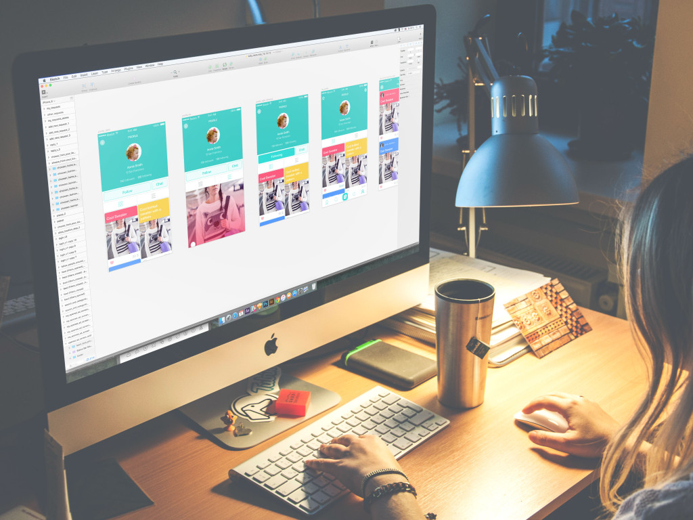

Inspiration and wisdom absorbed from the best professionals in the trade have always been the great source of motivation and consideration of the basics. Today we add the new set of our favorite wise thoughts and ideas to Tubik Quotes Collection. They are all based on great practical experience of well-known experts in the sphere of design and this time are concentrated on the important issues and tips of user-centered interaction design. Let’s get inspired from the masters!

People should never feel like a failure when using technology. Like the customer, the user is always right. If software crashes, it is the software designer’s fault. if someone can’t find something on a web site, it is the web designer’s fault… The big difference between good and bad designers is how they handle people struggling with their design. Technology serves humans. Humans do not serve technology.
People should never feel like a failure when using technology. Like the customer, the user is always right. If software crashes, it is the software designer’s fault. if someone can’t find something on a web site, it is the web designer’s fault… The big difference between good and bad designers is how they handle people struggling with their design. Technology serves humans. Humans do not serve technology.
When we interact with computers, what are we trying to achieve? Consider what happens when we interact with each other – we are either passing information to other people, or receiving information from them. Often, the information we receive is in response to the information that we have recently imparted to them, and we may then respond to that. Interaction is therefore a process of information transfer. Relating this to the electronic computer, the same principles hold: interaction is a process of information transfer, from the user to the computer and from the computer to the user.
When we interact with computers, what are we trying to achieve? Consider what happens when we interact with each other – we are either passing information to other people, or receiving information from them. Often, the information we receive is in response to the information that we have recently imparted to them, and we may then respond to that. Interaction is therefore a process of information transfer. Relating this to the electronic computer, the same principles hold: interaction is a process of information transfer, from the user to the computer and from the computer to the user.